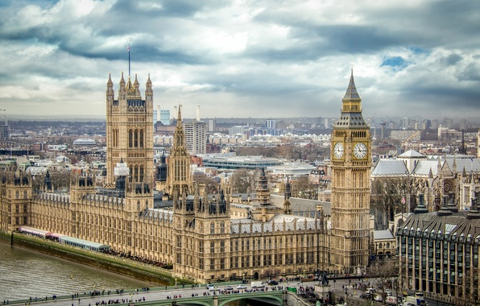

Casele Parlamentului – Parlamentul este o cladire impunatoare de pe malul Tamisei si un obiectiv turistic important in Londra cunoscut si sub numele de Palatul Westminster. Cladirea este situata pe locul in care Edward Confesorul a poruncit construirea palatului original in prima jumatate a secolului al XI-lea.
In 1547 rezistenta monarhista s-a mutat la Palatul Whitehall, dar Lorzii au continuat sa se intalneasca la Westminster, in timp ce Camera Comunelor se reunea la Capela Sf. Stefan. Inca din acele vremuri stravechi, Palatul Westminster a fost casa Parlamentului Englez. In 1834 un foc a izbucnit si a reusit sa distruga o mare parte din vechiul palat; tot ce a ramas a fost cripta capelei, un turn si Sala Westminster. Sala Westminster a fost salvata chiar de Lordul Melbourne, Primul Ministru din acea vreme, care a cerut ca pompele de stingere a incendiului sa fie amplasate chiar in sala si care a supravegheat personal operatiunea de stingere a incendiului.
Capodopera arhitectonica in stil gotic renascestist pe care o puteti vedea astazi a fost construita intre 1840 si 1888 de catre Charles Barry care a proiectat cladirea astfel incat sa se potriveasca cu Westmister Abbey care se afla in apropiere. Cele doua turnuri impunatoare, bine-cunoscute obiective turistice in Londra sunt turnul ceasului Big Ben si turnul Victoria in varful caruia steagul este arborat atunci cand Parlamentul se afla in sesiune. Multe dintre aranjamentele din interior in stil victorian sunt creatia asistentului lui Barry, Augustus Pugin.
Intrarea in Sala Westminster este permisa numai cu ghid insotitor. Sala poate fi vazuta si de pe terasa Sf. Stefan de deasupra. Sala Westminster masoara 73 de metri lungime si 18 metri latime iar acoperisul in forma de cupola este din stejar. Aceaste lucruri fac ca Sala Westminster sa fie una dintre cele mai impunatoare sali medievale din Europa. In acest loc incarcat de noblete si istorie au fost tinute bacheturi prilejuite de ceremonii de incoronare pana in anul 1821. Cea mai inalta curte de justitie din Anglia a fost aici pana in secolul al XIX-lea. Statuia lui Oliver Cromwell care salasluieste in afara salii, aduce aminte ca in 1653, acesta a fost numit Lord Protector.
Pentru a ajunge din Sala Westminster spre camerele superioare, turistii trebuie sa treaca prin usa uriasa de lemn a Salii Sf. Stefan. Peretii si tavanul sunt decorate dupa proeictul lui Barry pentru a inlocui capela medievala in care Camera Comunelor se reunea pana in anul 1834. Urmeaza apoi Lobby-ul Central pe ai carui pereti sunt incrustate motto-uri in limba latina. Acesta este locul in care membrii Parlamentului se intalnesc cu sustinatorii lor sau intre ei si unde se face „lobby” pentru anumite legi si idei. Din acest Lobby se poate ajunge in Camera Lorzilor sau in Camera Comunelor.